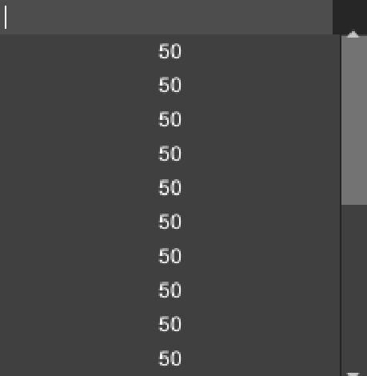
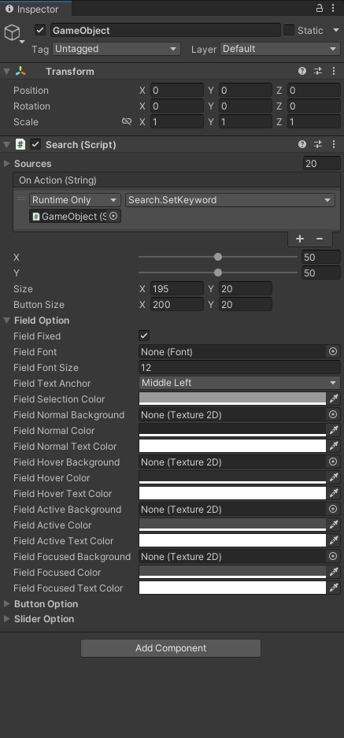

Searcher搜尋
作用: 提供簡易搜尋功能方法
<<=== Variable ===>>
m_keyword -- 搜尋的文字
source -- 搜尋資料來源陣列
action -- 作用方法
stringComparison -- 字符串比較，如: 忽略大小寫
Searcher.cs
示範應用Searcher.cs
作用: 提供簡易搜尋功能方法
以 Unity GUI System 作為範例
CustomSearch.cs
Search
作用: 使用該组件至 unity 空物件，可產生搜尋GUI面板
使用:
1.此類需要結合Searcher.cs，應用以上方法
2.Source填入資料來源
<<=== Unity Inspector Display Variable=== >>
On Action(String) Event: 當搜尋列按下第n項button時，傳入第n項的字符串
Inspector 操作項 X, Y: 以Screen Resulotion的相對位置，腳本內也有相對應的方法設置X, Y 值
..Option: 可更改UI介面設置


Search.cs
Search Extension
作用: Search增強版
<<=== Unity Inspector Display Variable ===>>
EmptyHide: 當輸入框無任何字符，開啟或關閉生成的來源按鈕
*註記(例如: 搜尋框一開始隱藏所有來源、指令框會一開始出現所有指令等等..用法)
Background Color, Background Texture2D: 調整背景顏色、背景貼圖
Show Slider: 開啟或關閉滑條的顯示，如關閉Slider依然可以使用，僅不會看到外觀樣式
Search.cs